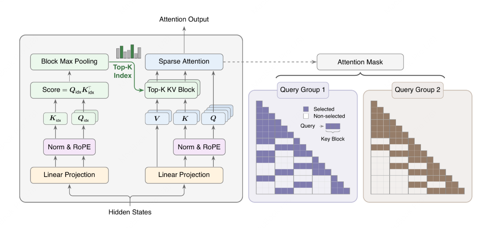
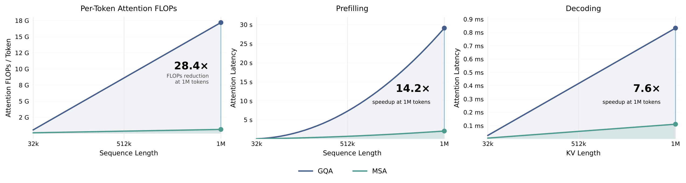

00全景与读法
所有稀疏注意力都在回答同一个问题：对当前 query，应读取历史中的哪些 KV。MSA 的回答由三个选择构成：按块选（Bk = 128 的连续块而非单个 token）、不压 KV（Main 分支跑在真实、未压缩的 GQA KV 上）、用 KL 对齐训选块器（以 Main 的真实注意力分布监督 Index 的块打分）。三个选择合起来的结果是：每 query 固定 2048 token 预算，1M 上下文下每 token 注意力算力降 28.4×，配套 kernel 后 H800 上 prefill 14.2× / decode 7.6×，109B MoE 上质量持平 GQA。对昇腾而言，Main 分支就是标准块稀疏注意力，NPU 上真正要新写的只有轻量 Index 选块 kernel——这使它成为最易移植的一档稀疏注意力。
每一节固定三段：朴素基线（左栏，灰，不看论文时的直觉实现）/ 它的做法（右栏，橙，MSA 的实际设计）/ 差在哪（下方色块，指出差异、原文是否给了理由、对 RL-on-NPU 的含义）。数字按来源分三类：自报 论文或厂商口径、第三方 独立测量、推断 本站分析。原文对全部性能数字标注 provisional、未经独立复现，本文保留该限定。
一条贯穿全文的线索：MSA 的每一处设计都在为"复用现有 kernel"让路。块级粒度、不压 KV、Index 与 Main 分离，代价是块内冗余与选块遗漏风险，换来的是 Main 分支与标准 attention 完全一致。这条务实取向决定了它在 NPU 上的移植面。
01背景：MiniMax 注意力路线的往返演进
MiniMax 的注意力路线经历了多次转折。M1 / MiniMax-01：选择投入 Lightning Attention（线性 / 次二次注意力），以线性复杂度换取长上下文能力。M2：规模扩大后发现，线性 / 滑窗注意力严重损伤"多跳推理"——跨长文档将分散线索串联起来的能力；团队只能退回完整二次注意力，承担算力成本以保住前沿智能。M3 → MSA：既要避免线性注意力的推理缺陷，又不愿承担二次注意力的全部成本，于是采取稀疏注意力这条中间路线——只在需要关注的位置做精确注意力。概括而言：MSA 是 MiniMax 在"线性能力不足、全注意力成本过高"之间确立的第三条路线。

这张图怎么读
要读的是两条跨子框的箭头及其标签，而不是三个子框本身。第一条箭头（M1 → M2）标注"线性能力不足损伤推理"：这是一个能力失败，导致路线向成本更高的方向退。第二条箭头（M2 → M3）标注"全注意力成本过高"：这是一个成本失败，导致路线向稀疏方向走。两次转折方向相反，说明 MSA 不是从原理出发的最优设计，而是两次受挫后的折中位置。
末端节点"MSA 等于两者之间的折中"给出了第 06 节的前提：它保留精确回溯（避免 M1 的失败），但不全量读取（避免 M2 的成本）——同时也引入了一种两者都没有的新失败模式：选块遗漏。
朴素基线
长上下文成本高，用线性注意力或滑窗把复杂度降到 O(n) 即可；能力损失可以靠规模弥补。
它的做法
自报 MiniMax 在 M1 实际走了线性路线（Lightning Attention），在 M2 规模扩大后发现线性与滑窗均严重损伤多跳推理，退回完整二次注意力；M3 改走稀疏路线。原文未给出 M2 时期多跳能力下降的量化数字。
差在哪朴素基线假设能力损失可被规模弥补，MiniMax 的经验是规模越大、线性注意力的多跳缺陷越明显，以至于不得不退回二次注意力。原文给出的是路线选择的理由而非数字。对 RL-on-NPU 的含义：稀疏（保留精确寻址）与线性（有损压缩状态）不是同一类方案，前者在长 agentic 轨迹上更可信，但代价结构不同。
02MSA 怎么工作：两个分支
MSA 把注意力拆成两段，跑在普通 GQA 主干上——不像 DeepSeek MLA 把 KV 压进低维潜空间，MSA 用的是真实、未压缩的 KV。① Index 分支（选块）：把 KV 序列切成大小 Bk = 128 的块；对每个注意力组（GQA group），用 max-pooling 打分给每个 KV 块算一个相关度，选 top-k（默认 k = 16）个块；永远保留最近的那个块（保证局部性 + 训练稳定）。② Main 分支（算注意力）：只在 Index 分支选出的那 k 个块上，跑精确的 softmax 注意力。复杂度为 O(n) 而非 O(n²) 的原因：每个 query 的预算被固定在 k · Bk = 16 · 128 = 2048 个 KV token——无论上下文是 8K 还是 1M，单 query 读取的 KV 量不变；上下文越长，节省越显著（1M 时约 28×）。

这张图怎么读
先看左框的对称结构：两个分支都从同一个 Hidden States 出发，各有自己的 Linear Projection 与 Norm & RoPE——Index 分支有独立的 Qidx / Kidx 投影参数，这正是第 05 节要解决的问题所在：这组参数收不到 LM 损失的梯度。Index 分支的输出只有一条绿色箭头"Top-K Index"进入 Main 分支的"Top-K KV Block"，即两个分支之间唯一的耦合是一组块号，Main 分支本身与标准注意力无异。
再看右侧两个掩码。每行是一个 query，每列是一个 Key Block（图例：Query → 一段连续 Key Block）。深色块的分布有两个规律：对角线附近始终为深色（"永远保留最近块"），其余深色块在行间跳跃、不连续（Index 按内容选块）。两个 query 组的掩码图案不同，说明选块是按 GQA 组独立进行的——同一层内不同组读取的历史块可以完全不同。掩码是下三角，意味着 MSA 在因果注意力框架内工作。图中未标出 Bk 与 k 的数值，默认值 128 / 16 来自论文。

这张图怎么读
与图 2 互补：图 2 是参数视角（哪些投影、哪些张量），这张图是预算视角。自上而下追一条 query 的读取量：入口是长度 n（可达 1M）的 KV 序列，经过 Index 分支后收窄为 16 个块，进入 Main 分支时已是 2048 个 token——序列长度 n 在这条链上只影响 Index 分支的打分成本，不再影响 Main 分支的读取量。
最值得看的是"永远保留最近那个块"被放在 Index 分支的末尾、Main 分支的入口：它不参与打分竞争，是一个无条件保留位。第 05 节会说明这个位置为什么是训练稳定的关键。
| 参数 | 默认值 | 含义 |
|---|---|---|
| 块大小 Bk | 128 token | KV 按块切分的粒度 |
| 每组选块数 k | 16 | 每个 query / 组保留的块数 |
| 每 query 预算 k · Bk | 2048 token | 固定，与上下文长度无关 |
| 主干 | GQA | 在真实 KV 上选块（非 MLA 压缩） |
| 选择粒度 | 块级（非 token 级） | 复用块稀疏 kernel，更易加速 |
朴素基线
稀疏注意力 = 对 attention 分数做 top-k 截断：先算完整的 QK⊤，再只保留最大的若干项做 softmax。
它的做法
自报 选块与算注意力分离为两个分支，Index 分支用独立的低成本投影 Qidx / Kidx 打分并按块 max-pooling，Main 分支只对选中的 16 块计算——完整 QK⊤ 从不被计算；预算固定为 2048 token，不随 n 变化。
差在哪朴素基线的 top-k 截断仍要先算完整 QK⊤，复杂度仍是 O(n²)，只省了 softmax 之后的 V 读取；MSA 的 Index 分支用另一组更便宜的投影决定读什么，Main 分支从头就只碰 2048 个 token。原文给出了预算固定的推导（k · Bk），没有给出 Index 分支自身的打分成本占比。对 RL-on-NPU 的含义：decode 时每步的 KV 访存被固定上界，这是第 09 节"decode 提速对应 rollout 瓶颈"的机制基础。
03块级稀疏是务实选择的原因
区别在于选择的最小单位是单个 token 还是一整块连续 token。token 级稀疏（DSA）为每个 query 单独判定每个历史 token 的去留，数学上最灵活（精确挑出最相关的若干 token、不带无关邻居），但代价全部集中在 kernel 上：选中的 token 在 KV cache 里离散分布，要聚合成可供 matmul 使用的连续 tile 必须做 gather（按索引收集）、计算完成后再 scatter；索引是 per-query / per-step 动态变化的、访存高度碎片化、几乎没有空间局部性；GPU / NPU 的矩阵单元处理的是规整连续块，token 级 gather 得到的是离散分布的行，要么 padding 对齐（浪费算力）要么编写变长 kernel（实现复杂、难以调优）；动态索引还拖累流水线（难以做静态形状假设）。块级稀疏（MSA、MoBA）把粒度提升到 128 个 token 一块：一旦某块被选中，块内 128 个 token 在内存里本就连续、直接是对齐完毕的 tile，天然适配 matmul、无需 gather 单个 token——这正是现成 block-sparse attention kernel 的工作模式（FlashAttention 类早已支持"按块掩码"）。MSA 的 Main 分支本质就是"在一个块的子集上跑标准 attention"，直接复用这套高度优化的实现；选块索引也是块粒度的（每组选 16 个块号）、数据结构小而规整、便于静态 tiling。代价是粒度变粗：以 128 为统一划分单位，被选中的块内难免混入相关度较低的 token，它们也会进入精确 softmax（只是权重被压低）——MSA 接受这部分冗余，换取工程上可实际加速、可实际移植的 kernel 路径。
朴素基线
粒度越细越好：token 级选择挑出的正是最相关的 token，不浪费预算在无关邻居上，质量上限最高。
它的做法
自报 以 128 token 为块，接受块内混入低相关 token 的冗余；换取 Main 分支直接复用 block-sparse kernel、选块索引为每组 16 个块号、可静态 tiling。推断 原文对 token 级的代价描述（gather / scatter、碎片化访存、变长 kernel、动态形状）为机制分析，无测量数字。
差在哪差别在把成本从数学灵活性转移到 kernel 复杂度上的方向：token 级把代价全部压在 kernel（离散 gather），块级把代价压在预算利用率（块内冗余）。原文给了理由（矩阵单元处理规整连续块）但没有给"块内冗余损失多少质量"的数字——这正是第 12 节"块级 vs token 级质量差"要看的。对 NPU 的含义最直接：块级路径复用现有 kernel，token 级路径需要新写变长 gather kernel 并对齐精度。
04"不压 KV"是同一务实哲学的另一面
MLA / DSA 把 KV 投影到低维潜向量再存，decode 省显存，但 Main 计算要在压缩表示上做、kernel 与标准 attention 不再一致、移植要重写；MSA 保留原始未压缩 KV，Main 分支执行的就是标准的 GQA 注意力——完成选块之后剩下的运算和普通 attention 没有任何区别，唯一需要新写的只有那个轻量 Index 选块 kernel。对 NPU 这类 kernel 生态不如 CUDA 丰富、每个新算子都需人工重写并对齐精度的平台，这一点几乎决定了能否落地。
朴素基线
长上下文的瓶颈是 KV 显存，先把 KV 压缩（低维潜向量）再谈稀疏，两者叠加收益最大。
它的做法
自报 不压缩 KV，Main 分支直接在真实 GQA KV 上算；用"每 query 只读 2048 token"而非"每 token 占更少字节"来降低访存。移植面 = 一个轻量 Index 选块 kernel。
差在哪压缩降低的是每 token 的字节数，稀疏降低的是每步读取的 token 数；MSA 只取后者，放弃了 KV 显存占用的收益（原文未给 MSA 的 KV 显存数字），换取 Main 分支 kernel 与标准 attention 完全一致。原文明确指出对 NPU 而言这一点"几乎决定了能否落地"——理由是每个新算子都要人工重写并对齐精度。
05训练方法：top-k 不可导，以 KL 对齐解决
这是 MSA 设计中最精巧的部分。top-k 块选择是不可导的——语言建模损失的梯度无法传到 Index 分支的投影参数上，Index 分支无法学习"应选哪些块"。MSA 的解法：KL 对齐损失（KL alignment loss）——让 Index 分支打分得到的块分布对齐 Main 分支真实的注意力分布。即以 Main 分支"实际关注的位置"为教师信号，反向监督 Index 分支"应选择的位置"。再配合"永远保留最近块"作为保障，训练即可保持稳定。训练规模：在一个 109B 参数的 MoE 上做了原生多模态训练，token 预算约 3T。

这张图怎么读
子框"KL 对齐"内两条虚线是全图的核心：一条从 Main 分支标注"对齐目标"，一条从 Index 分支标注"被监督"。虚线表示这不是前向数据流，而是一个额外的损失项——Main 分支在前向中照常计算，其注意力分布被顺带用作软标签，无需任何人工标注。
末端节点"永远保留最近块"看似与 KL 无关，实际是 KL 的前提：训练早期 Index 是随机的，如果 Main 只能看到 Index 选出的噪声块，Main 产出的软标签同样是噪声，KL 会用噪声监督噪声。最近块保证 Main 始终有一个可靠的信息基础，从而给 KL 一个非退化的起点。读这张图时应把最后两个节点视为一个循环的两个止点，而非顺序步骤。
更细地讲：选块的 top-16 是个 argmax / topk 操作，输出是"选 / 不选"的 0/1 离散决定。LM 交叉熵损失只能从"被选中、真正参与了 Main 分支 softmax"的块上回传梯度——一个块的分数从 0.61 波动至 0.59，只要未跨过 top-16 门槛、选择结果不变、损失不变、梯度为 0；一旦跨过门槛，选择瞬间跳变、梯度无定义。于是给块打分的 Index 投影无法收到有效 LM 梯度。KL 对齐绕开了这条不可行路径：Main 分支在选中块上做精确 softmax，会算出一组真实注意力权重，这组分布直接反映模型真正需要关注的位置，按块聚合得到"Main 视角下各块的重要性分布"作为软标签；同时让 Index 分支的块打分（经 softmax 后）也构成一个分布，用 KL 散度使其对齐这个软标签——KL 对两侧分布都可导，梯度顺畅流回 Index 投影。"永远保留最近块"是稳定性的关键保障：训练早期 Index 投影仍是随机的、选出的块大概率是噪声，若完全依赖它决定 Main 的可见范围，Main 在低质量上下文上计算注意力、产出的软标签同样低质量、KL 再以低质量标签监督 Index——形成自我强化的恶性循环，可能导致训练崩溃；强制保留最近若干块，保证无论 Index 质量如何，Main 始终能看到局部上下文（语言中最强相关性本就高度集中在近处），既给模型一个始终可靠的信息基础，也给 KL 一个非退化的监督起点。
朴素基线
选块器与主干一起端到端训练，靶向 LM 损失；top-k 用 straight-through 或 Gumbel 松弛近似梯度。
它的做法
自报 不对 top-k 做梯度近似，而是增加一个 KL 对齐损失：教师 = Main 分支真实注意力按块聚合的分布，学生 = Index 分支打分经 softmax 的分布；配合无条件保留最近块防止早期恶性循环。109B MoE、原生多模态、约 3T token。
差在哪差别在监督信号的来源：朴素基线让 LM 损失穿过一个不可导算子的近似，MSA 让 Index 学一个可导的代理目标——"Main 实际关注了哪些块"。原文给了完整理由（0/1 离散决定、门槛内梯度为 0、跨门槛梯度无定义），但没有给 KL 项的权重系数、按块聚合的具体方式（求和还是取最大）、以及 Main 的软标签是否只在选中块内归一化。对 RL-on-NPU 的含义：KL 对齐使 Index 与 Main 的一致性成为训练目标之一，因此 NPU 上重写 Index kernel 后两侧选块是否一致，是一个可以量化的对齐指标（第 09 节）。
06多跳推理：MSA 保住了什么、引入了什么
MSA 并非一开始就确定的方案，而是三代模型间经过实践受挫后确立的折中。M1 的 Lightning Attention把"query 对所有历史 key 求注意力"重写成可递推形式，历史被压缩进一个固定大小的状态（类似 RNN 隐状态），每步更新状态而非重扫全部 KV，算力和显存都降到常数级；但固定大小状态是有损压缩，多跳推理恰是薄弱环节——多跳要求在长文档里把分散在不同位置的线索精确串联（A 在第 3 段提到某实体，B 在第 80 段给出它的属性，需将两处关联），当早期那个精确 token 被压入固定状态、被后续上万 token 不断覆写稀释后，回溯取回时已无法精确还原；全注意力之所以能多跳，正因它对每个历史 token 都保留可被精确寻址的表示。M2 观察到线性和滑窗（窗外信息一律丢弃）都损伤多跳，于是退回完整二次注意力。M3 的 MSA 试图兼顾两者：保留精确回溯能力——在真实未压缩 KV 上对选中块做精确 softmax，被选中的早期块其 token 表示和全注意力下没有区别、query 能精确寻址取回；只是不全量读取——通过块级 top-k 把读取范围限制在固定预算。但这一折中引入新的失败模式：块级选择可能遗漏——若多跳关键线索落在某块里而 Index 未将其选入 top-16，该块完全不进入 Main 的 softmax、信息直接丢失，这是全注意力不存在的风险；这也正是 KL 对齐要解决的核心，以及"永远保留最近块"只能保障局部、无法覆盖远距离线索的原因——选块的召回率直接决定 MSA 多跳能力的上限。
朴素基线
稀疏注意力与线性注意力都是"省算力的近似"，能力损失属于同一类，只是程度不同。
它的做法
推断 两者的失败模式不同：线性注意力的损失是表示级的（固定状态有损压缩，早期 token 无法精确还原）；MSA 的损失是选择级的（被选中的块表示与全注意力完全一致，未被选中的块整体丢失）。MSA 的多跳上限由 Index 召回率决定。
差在哪这一节是原文的机制分析，不含数字。它给出了一个可检验的预测：MSA 的失败应表现为"漏块"而非"糊化"——某条远距离线索要么被精确取回、要么完全缺失，不存在中间态。原文没有给 MSA 在多跳 / 长上下文检索基准上的分数，只有"109B 上质量持平 GQA"的总口径（第 08 节）。这也是第 12 节第二条关注项的原因。
07和别家稀疏 / 压缩注意力比
2025–26 各家在降低长上下文成本上采取了不同路线，关键差异在是否压缩 KV、选 token 还是选块。MSA 的差异化：不压 KV、按块选、运行在真实 KV 上。代价是块级粒度比 token 级更粗，但换来工程上的简洁——这正是它能快速落地、也最易移植的原因。
| 方案 | 主干 | 机制 | 取舍 |
|---|---|---|---|
| MLA（DeepSeek V3） | — | 把 KV 压成低维潜向量 | 省显存；但要专门 kernel |
| DSA（DeepSeek V3.2） | MLA | lightning indexer → token 级 top-k | 质量稳；kernel 重 |
| NSA（早期） | GQA | 三分支（压缩 / 选择 / 滑窗）+ 门控 | 上限高；最复杂 |
| MoBA | — | 块级选择 | 思路接近 MSA |
| MSA（MiniMax M3） | GQA | Index 分支选块 + Main 分支在真实 KV 上精确注意力 | 务实——复用现有 kernel、对齐损失可训、易加速 |

这张图怎么读
第一层分叉是"是否压 KV"，这是原文认为对移植最关键的维度——压 KV 的两家（MLA、DSA）Main 计算都在压缩表示上进行，kernel 偏离标准 attention。第二层在不压 KV 一侧再分三家：NSA 结构最复杂（三分支加门控），MoBA 与 MSA 同为块级选择。
要注意 DSA 挂在压 KV 一侧但同时是 token 级选择：它在两个维度上都取了"kernel 重"的选项（压缩表示 + 离散 gather），与 MSA 在两个维度上都取"kernel 轻"的选项构成对角。这个对角关系就是第 12 节"块级 vs token 级质量差"要量化的对象。MoBA 与 MSA 之间的差别原文只说"思路接近"，未展开。
朴素基线
各家稀疏注意力按论文分数排序选一个最强的；机制差别是实现细节。
它的做法
推断 按两个工程维度分类——是否压 KV、选 token 还是选块——每个维度直接对应一类 kernel 工作量。MSA 在两个维度上都选了 kernel 最轻的一端；DSA 在两个维度上都选了 kernel 最重的一端。
差在哪原文的对比表没有一列分数，全部是机制与 kernel 取舍——这是刻意的：对 NPU 平台而言，方案之间的差别首先是"要新写多少算子"，其次才是质量。这一节没有给任何方案的质量数字，NSA "上限高"、DSA "质量稳"均为定性判断。
08性能数字（论文口径）
质量：109B 模型上与 GQA 持平（无线性注意力那类推理性能下降）。算力：1M 上下文下，每 token 注意力算力降 28.4×。墙钟提速（配套 co-designed kernel，H800）：prefill 14.2× / decode 7.6×。厂商早期 teaser 给过约 20× 算力、>9× prefill、>15× decode 的口径，以论文 28.4 / 14.2 / 7.6 为准；均 provisional。

这张图怎么读
先看三条绿线的形状：三个面板里 MSA 都近乎水平，这是"每 query 固定 2048 token 预算"的直接图形表现——MSA 的成本几乎不随长度变化，而 GQA 的成本随长度线性（左、右面板）或二次（中面板）上升。因此三个倍数都不是常数，而是1M 这一个点上的读数；在 32k 处两条线几乎重合，倍数接近 1。任何"MSA 快 7.6×"的引用都应带上"1M 上下文"这个条件。
再看三个面板的纵轴单位与曲线形状为何不同：左图是理论 FLOPs（每 token，GQA 线性增长，因为每个新 token 要看全部历史）；中图是 prefill 总延迟（对整段序列，故 GQA 呈二次），单位是秒，1M 处 GQA 约 29 s 对 MSA 约 2 s；右图是 decode 单步延迟（单位毫秒，1M 处 GQA 约 0.83 ms 对 MSA 约 0.11 ms），横轴换成了 KV Length。decode 的 7.6× 低于 FLOPs 的 28.4×，说明 decode 端还有 FLOPs 之外的固定开销（原文未拆解，本站推断为 Index 分支打分与访存开销）。对 RL rollout 最相关的是右图：decode 单步延迟被压到接近水平，这是第 09 节的核心依据。所有曲线为 H800 上厂商自测，provisional。
| 指标 | 数值 | 条件 |
|---|---|---|
| 模型质量 | 持平 GQA | 109B MoE，原生多模态，3T token 训练 |
| 每 token 注意力算力 | 降 28.4× | 1M 上下文长度 |
| Prefill 加速 | 14.2× | H800，长上下文 |
| Decode 加速 | 7.6× | H800，长上下文 |
| 每 query 注意力预算 | 固定 2048 token | Bk = 128、k = 16，与上下文长度无关 |
| 方案 | 是否压 KV | 选择粒度 | kernel 与移植 |
|---|---|---|---|
| MLA | 压（低维潜向量） | 不做稀疏选择，靠压缩降本 | Main 在压缩表示上算，kernel 偏离标准 attention，移植需重写 |
| DSA | 压（MLA 基础上） | token 级 top-k | token 级 gather / scatter，kernel 重、碎片化 |
| NSA | 含压缩分支 | 三分支：压缩 / 选择 / 滑窗 + 门控 | 多分支 + 门控，结构复杂，kernel 工程量大 |
| MoBA | 不压 | 块级选择 | 块级，相对易加速 |
| MSA | 不压（真实 KV） | 块级 top-k（每 GQA 组选 16 块） | Main 复用标准块稀疏 kernel，仅新写轻量 Index 选块 kernel，务实易移植 |
朴素基线
28.4× 算力下降应直接转化为 28.4× 的推理提速；提速数字对任何上下文长度都成立。
它的做法
自报 三个数字分别是 FLOPs（28.4×）、prefill 墙钟（14.2×）、decode 墙钟（7.6×），且均为 1M 处读数；墙钟提速依赖 co-designed kernel。厂商早期 teaser 数字（约 20× / >9× / >15×）与论文不一致，原文以论文为准。
差在哪三个数字度量的是三个不同的量，从 FLOPs 到墙钟逐级衰减（28.4 → 14.2 → 7.6），衰减的部分就是 FLOPs 之外的开销。原文没有拆解这部分开销，也没有给 1M 以外长度的倍数。teaser 与论文口径的不一致（尤其 decode：>15× 对 7.6×）提示引用时须注明来源版本。对 NPU 的含义：在昇腾上重写后能拿到的是哪一个数字，取决于 Index kernel 与块稀疏 Main kernel 在 NPU 上的实现质量，而非 FLOPs 理论值。
09对 RL-on-NPU 的意义
本看板重视 MSA 的原因有四条。最易移植到昇腾：MSA 跑在普通 GQA + 未压缩 KV 上，Main 分支就是标准块稀疏注意力，能复用现有 kernel；NPU 上真正要新写的只是那个轻量 Index 选块 kernel，相比 MLA / DSA 要重写一整套压缩-注意力路径，移植面小得多。decode 大幅提速直接对应 RL 瓶颈：RL 的 rollout 是 decode-heavy 且 memory-bound；MSA 的 7.6× decode 与"每 query 仅读取 2048 token"直接降低 KV 访存，缓解昇腾"无 sleep-mode"的显存争用（见 NPU 架构页的"RL 显存争用"视图）。须关注数值一致性：块选择 + KL 对齐 + 在 NPU 上重写 Index kernel，会引入新的 train-inference mismatch 风险——训练时选中的块集合与 NPU 推理时选中的块集合若不一致，质量可能隐性下降；这正是看板 align-probe 想法该量化的：NPU 上 MSA 的选块是否和 GPU 训练时一致，落地前须验证两侧选块一致性。现状：vLLM-Ascend 已有 MiniMax 系（M2.x）的 W8A8 / QuaRot，但 M3 尚未按名列入——MSA 的 Ascend 落地是一个明确、可执行的工程缺口。
朴素基线
移植一个注意力机制到 NPU = 把论文里的公式重写成 NPU 算子，做完数值对齐（逐元素误差）即可上线。
它的做法
推断 MSA 的移植面被结构限定为一个 Index 选块 kernel（Main 复用现有块稀疏 kernel）；但对齐对象不只是逐元素误差，还有选块集合的一致性——top-16 是离散决定，微小的分数漂移可能翻转边缘块的选择，使 GPU 训练与 NPU 推理看到不同的上下文。第三方 vLLM-Ascend 现有 MiniMax M2.x 支持（W8A8 / QuaRot），M3 未列入。
差在哪差别在对齐的粒度：逐元素误差在阈值内不代表选块集合相同。原文把这一风险命名为 train-inference mismatch，并给出了验证工具的定位（align-probe：比较两侧选块），但没有给出可接受的不一致率阈值或任何测量。与 D01 的联系：D01 把 MiniMax-M3 列为"解码侧最易移植"的载荷，本篇给出了理由（GQA + 真实 KV + 块级），也给出了代价（选块一致性成为新的对齐项）。
10总表：朴素基线 vs MSA 的做法
| 主题 | 朴素基线 | MSA 的做法 · 本站判断 |
|---|---|---|
| 路线选择 | 线性注意力降复杂度，能力靠规模补 | M1 线性 → M2 退回二次 → M3 稀疏；规模越大线性的多跳缺陷越明显（自报经验，无数字） |
| 两个分支 | 算完整 QK⊤ 再 top-k 截断 | Index（独立轻量投影 + max-pooling 选 16 块）与 Main（选中块上精确 softmax）分离；预算固定 2048 token，从不算完整 QK⊤ |
| 选择粒度 | token 级最精确 | 128 token 块级，接受块内冗余；换 Main 复用 block-sparse kernel、索引可静态 tiling。质量代价未量化 |
| KV 压缩 | 先压 KV 再稀疏 | 不压 KV，只降读取 token 数；Main 与标准 GQA 注意力完全一致，移植面 = 一个 Index kernel |
| 训练 | straight-through / Gumbel 近似 top-k 梯度 | KL 对齐：Main 真实注意力按块聚合为软标签监督 Index 打分；无条件保留最近块防早期恶性循环。KL 权重、聚合方式未给 |
| 多跳推理 | 稀疏与线性同类近似 | 失败模式不同：线性为表示级糊化，MSA 为选择级漏块；上限由 Index 召回率决定。无多跳基准数字 |
| 横向对比 | 按论文分数选最强 | 按是否压 KV × 选 token / 块两维分类；MSA 两维均取 kernel 最轻端，DSA 两维均取最重端 |
| 性能数字 | 28.4× 即推理提速 | FLOPs 28.4× → prefill 14.2× → decode 7.6×，均为 1M 处读数、H800、co-designed kernel；teaser 口径不一致，以论文为准（provisional） |
| NPU 移植 | 重写算子 + 逐元素对齐 | 移植面小（一个 Index kernel），但需对齐选块集合而非仅数值；vLLM-Ascend 有 M2.x 无 M3——明确的工程缺口 |
11原文没给的东西
以下内容原文未给出数字、理由或独立来源，复现或引用时需自行确定或保留限定语：
- KL 对齐损失的权重系数，以及 Main 注意力"按块聚合"的具体方式（求和 / 取最大 / 归一化范围）——复现必须自定。
- "永远保留最近的那个块"的数量——原文一处写"最近的那个块"，一处写"最近若干块"，具体保留 1 块还是多块未明确。
- Index 分支自身的成本（Qidx / Kidx 维度、打分 FLOPs 占比）——decode 7.6× 低于 FLOPs 28.4× 的差额未被拆解。
- 块内冗余造成的质量损失（块级 vs token 级）——原文只给"109B 上持平 GQA"的总口径，无多跳 / 长上下文检索基准分数。
- 1M 以外长度的倍数——三个倍数均为 1M 处读数，图 6 显示 32k 处接近 1×，中间长度未给数字。
- MSA 的 KV 显存占用——不压 KV 意味着显存与 GQA 相同，原文未给数字确认。
- 厂商 teaser 与论文口径的差异原因（约 20× / >9× / >15× 对 28.4× / 14.2× / 7.6×）——原文只声明以论文为准。
- align-probe 的可接受不一致率——选块一致性作为对齐指标被提出，但阈值未定义。
- MoBA 与 MSA 的具体差别——原文只说"思路接近"。
- 所有性能数字为论文 / 厂商口径，H800 自测，provisional、未经独立复现；两张原图均取自 MiniMax 官方 GitHub 仓库 README，属厂商自报。
12可搬走的判断与下一步
一、MSA 的移植面由结构决定，而不是由实现决定。GQA 主干 + 真实 KV + 块级选择，使 Main 分支与标准块稀疏注意力完全一致；NPU 上要新写的只有轻量 Index 选块 kernel。相比 MLA / DSA 需重写整套压缩-注意力路径，这是稀疏注意力中移植成本最低的一档——D01 "解码侧最易移植"的判断在此得到机制支撑。
二、三个倍数是三个量在同一个点上的读数。28.4× 是 FLOPs、14.2× 是 prefill 墙钟、7.6× 是 decode 墙钟，全部在 1M 上下文、H800、co-designed kernel 条件下；32k 处接近 1×。对 RL rollout 最相关的是 decode 的 7.6× 与"每 query 固定 2048 token"——它直接降低 memory-bound 的 KV 访存。引用时须带条件，且注意 teaser 与论文口径不一致。
三、选块一致性是 NPU 上新增的对齐项。top-16 是离散决定，逐元素误差在阈值内不保证 GPU 训练与 NPU 推理选出同一组块；块选择 + KL 对齐 + 重写 Index kernel 三者叠加的 train-inference mismatch 是隐性的质量风险。align-probe 应比较两侧选块集合，而非仅比较输出张量。
MSA 的 Ascend kernel——哪一方率先在 910B / 950 上完成 Index 选块 + 块稀疏 Main 分支并公布吞吐；vLLM-Ascend 目前有 M2.x 无 M3 · 块级 vs token 级的质量差——MSA（块）与 DSA（token）在长上下文检索 / 多跳推理上的真实差距，这是"选块召回率决定多跳上限"这一预测的检验 · MSA + FP8——把 D02 / D03 的 FP8 rollout 叠到 MSA 上，decode 端还能再省多少。